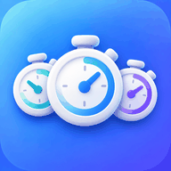

Cronômetro
Quatro versões
Arquivo
Diagnóstico
Ferramentas do Oficial
InicializadorAbertura limpa sem bloquear o app.
RecuperaçãoRemove somente runtime/cache.
Modo SeguroLê o banco diretamente e cria backup sem carregar o app.›
Ferramentas da Beta
Inicializador BetaAbertura limpa da Beta.
Recuperar BetaNão toca no Oficial.
Modo Seguro BetaInspeciona somente o banco de testes.›
Importante: a Beta usa
cronometro_beta_v1, separado de cronometro_local_v1. A cópia permitida é somente Oficial → Beta.